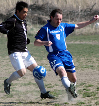
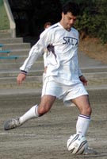
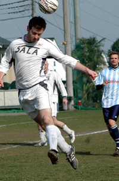
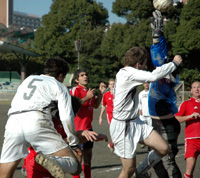
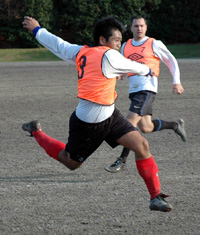
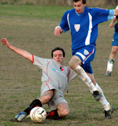
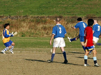
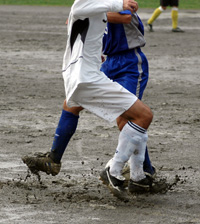

Season 4 (2006~2007)
GAME OVER.... for now.
 |
Friday, 29th June, Legends Sports Bar Roppongi,
Whether drowning sorrows or celebrating victories there was certainly a lot of booze flowing at the Tokyo Metropolis League's end-of-season BBQ Party and Award Ceremony, attended by more than 250 of the leagues faithfuls - including some notable TML & Footy Japan sponsors/supporters: Mark & Mary Devlin from Metropolis, Nick Johnston from Wall Street Associates, Gregory Glanzmann from BMW, Yuji from Footnik (soon to be opening in Osaki) and James Oakes from new supporters Gaba - who we'd like to thank for coming along presenting awards and generally putting up with a bunch of roudy, pissed-up lads. more ...
FJ.
Shane Shock BEFC in FJ Plate Final
Hachioji Park, Sunday 17th June,
Some may have thought a match between BEFC & Shane FC, opposite ends of the table, 30 points separating them, would be a forgone conclusion. But that's the beauty of the Cup (plate in this instance), where upsets are always on the cards.
Well as seen last week in the FJ Cup final, one team just seemed to want it more and so it was that Shane FC pulled one out of the bag to beat BEFC 4-2 on penalties after tying 1-1 in regulation and over time.
Shane top scorer Giles Mitchell, playing goalie in the 2nd half, turned hero when he saved 2 of BEFC's 4 spot kicks in the resulting PK shoot-out.
Departing Captain Matt Colcaveccia was overjoyed to lead out his team on his final match, to a monumental victory More ...
FJ.
Over But Not Out!
 |
Hachioji Park, Sunday 17th June,
Last game and barring an absolute freak thrashing (cup game aside) this game would see the Celts stay up in TML 1 next season. On a scorching hot surface Celts and Geckoes resumed after the washed out previous game.
Geckoes came into the game safe in division 1 and showing off some shiny new silverware. But it was the Celts who started brightly with some crisp passing and confident play. Yet good things rarely last especially for us and somewhat against the run of play a quick break by Geckoes allowed their centre forward to get in behind the back four, nip in front of Aki and finish well.
It could have got far worse as a very similar opportunity quickly followed but Aki stood up well. The tought of an 8-0 defeat never entered the mind! more ...
GD.
Geckoes Win FJ Cup in Rousing Style
 |
Misato, Saturday 9th June, The Geckoes proved it was no fluke them being in the final of the FJ Cup, by beating Sala 2-1 at Misato on Saturday afternoon. Many had said their victory over BFC in the semis was a mere stroke of luck, but according to 'Rob Manager' it was all a cuning ploy to get some silverware
The pitch may have left something to be desired but the Geckoes were well up for the task, bringing out lots of fans decked out in WSG Yellow tops and copious amounts of beer in preparation for what turned out to be a famous victory for the WallStreet boys. The noise from the bleachers* (read single bench in the middle of no where) could be heard across the plains of Saitama (even if you couldn't understand a word of it!) more ...
FJ.
TML Stars Shine in Asia
S.E. Asia, May/June, Not for the first time this year, TML players took to the skies to play in various 7's tournaments in South East Asia, achieving some great results. Kirk of Swiss Kickers took an all star squad to the prestigious Hong Kong 7's only losing to an ex-pro team in the semi-finals of the Masters tournament. On the way there, they beat Southhampton veterans with the likes of Matt LeTissier 5-0, doing themselves proud more ...
The following weekend, league maestro, Sid, went to Bangkok to join Cosmos FC in the BCCT/Tesco Bangkok 7's. Having reached the semi-finals, he played against and beat his Liverpool FC heroes, Ian Rush & John Barnes amongst others! which only left the mighty Vikings to play aganst in the finals more ...
FJ.
Geckoes Stay Up at France's Expense
Hachioji Park, Sunday 3rd June, The Geckoes faced France in a relegation decider at Hachioji Park on Sunday afternoon. With the Celts losing to already relegated Jetro in the game before, it meant that the Geckoes needed two points from their remaining two games to clinch safety, for the French it was simply a must win.
more ...
RM.
Hibs Finish Season with a Flurry of Goals
Todoroki, Sunday 27th May, With a victory in their final game of the season the Hibs had the chance to leap-frog a couple of perennial mid table teams (whose names escape me at the moment) and relieve them of the vertigo that they had no doubt been suffering from, before the condition became permanent. This could have had dire consequences with known side effects too numerous to mention. France FC had motivations of their own as they were embroiled in a relegation battle and for a club with a proud history they had a lot to play for. more ...
BC.
BFC WIN LEAGUE BY 6-POINTS
Hachioji Park, Saturday 26th May,
Newly crowned TML champions BFC finished their season with a 4-0 victory over Kanto Celts, skipper Jon Day scoring twice as we finished six points ahead of second-placed Swiss Kickers.
It was 0-0 at halftime too -- a common theme in BFC-Celts games. That all changed with two goals inside a minute at the start of the second half through Jon and young Alex Sahara.
more ...
KC.
Down Without a Fight
Fuchu no mori, Saturday 26th May, Jetro FC sent themselves down to Division 2 without a shot being fired late Friday night, when they decided to cancel their Saturday fixture with Sala. The 3-0 forfeit win left Sala poised at 3rd awaiting Hibs final result but the -1pt forfeit meant, regardless of their final result against Celts, thet Jetro would be unable to rise from the bottom of Division 1. This now leaves 3 teams on 13 points and all having to play each other to find out who is the other team for the chop.
FJ.
Shame FC
Yoyogi NHK, Sunday 20th May,
"How long, oh lord, how long?" (Hunter S. Thompson)
Well, for Shane FC, the answer to the late great Doc's question was "just 90 minutes more" as they came to Yoyogi Park in search of one last victory to add a little respectability to a season which, according to the table, they would mostly like to forget. Their opponents, Stoneds, also suffered a below par season, and in the light of the FA Cup Final, nobody in attendence was expecting a masterclass in the sweltering Tokyo heat.
more ...
AW.
Relegation Battle Finely Poised.
Misato, Sunday 13th May, With all the razzmatazz and fanfare of the Premiership relegation games, the Kanto Celts arrived at Misato ASG on a warm Sunday afternoon ready to take on France FC in a game which could make all the difference in who stays in the top flight of the TML and who goes down.
more ...
SY.
French Get a Swiss Lesson.
Hachioji Park, Sunday 6th May, A very English day met the Swiss as they were to round out the season, rain and a chilly breeze at Saitama Stadium (well, Hachioji Koen) for their final match of the '06-'07 campaign. Hopes of sneaking the title from the British on goal difference were dashed the day before with Sala being well beaten by the BFC, allowing them to claim the championship with a match in hand - well done to them. They were the strongest throughout the year, consistent recruiting on the part of management meant that player turnover and inavailability were mere speed bumps as they raced to the title. more ...
KN.
"It's Been a Long Time Coming..."
Hachioji Park, Saturday 5th May,
The great Sam Cooke once sang:
"There've been times that I've thought I couldn't last for long
But now I think I'm able to carry on
It's been a long time coming
But I know a change is gonna come…”
A change has come for BFC and it’s been a long time coming indeed, more than a decade according to some scholars, but BFC have won the league, not that TML has been running for a decade, but BFC outdates TML by a fair few years… more ...
JD.
If you fly with the crows…
Hachioji Park, Saturday 5th May, Sala handed BFC their first TML title after being outplayed by the champions at Hachioji on Saturday.
BFC scored three times in the first half to virtually kill the game, and the second half was played out as something of a formality.
Sala started brightly enough and indeed could have taken the lead when Toby’s goal bound strike was blocked by a defender with the keeper floundering on the ground. more ...
RC.
Lowly Jetro Overcome Hibs.
OiFuto, Saturday 5th May, We went into our 2nd last match of the season with position on the ladder the only goal to aim for, our season that began with a bang and had been finishing with a whimper. Despite going out of the cup and falling out of the running for the league several weeks before, perhaps we could muster enough talent to see our way past bottom placed Jetro in our second last match of the year.
Perhaps not. more ...
BC.
Swiss Run Riot Over Celts.
 |
OiFuto 1, Sunday 29th April, The pitch was waterlogged but the weather was beautiful enough to offset the mud at Oifuto on Sunday. A nearly full strength Swiss team had gathered to do battle with the Celts who appeared to be missing a few key players. It is an unusual luxury for a Swiss team that has struggled for consistency in lineups and form this year. more ...
KN.
Abysmal!
OiFuto 1, Sunday 29th April, Celts tamely rolled over to an average Swiss side with a talented Englishman and someone who claims to be Irish up front, several Japanese in midfield and defence, and perhaps a Swiss or two somewhere on the pitch. Whoever they have playing its doubtful they will have it so easy again. more ...
RH.
The Sound of Distant Clucking
Hachioji Park, Saturday 28th April, A fabulous goal from Pink Neil gave BFC a 1-0 win over Jetro to leave them needing one point from their final two games to secure a first TML title.
Comments from TML rivals talking of 'gifting' BFC the championship were rendered well and truly absurd as, once again, BFC were forced to grind out a tough win Bung Meister George Graham would have been proud of. more ...
AH.
Lions Finally Roaring.
Misato, Sunday 22nd April, On a windy but beautiful day at Misato, Lions were playing their last game in their first TML campaign that was plagued by below par performances due to lack of keeper.
The opponents this time were WS Clash who were 3 points ahead and 8 goals better than Lions. more ...
HS.
JETS s Storm Back to Claim Point From Hibs.
Hachioji Park, Saturday 21st April, Saitama Jets produced a stirring second half comeback to grab a point from last season’s champions, Hibs, at Hachioji Park on a hot Saturday afternoon. Hibs led 2 – 0 at half time thanks to two quality strikes, but perpetual substitute Shimizu laid claim to a starting place in the Jets’ attack with two superb finishes late in the second half to continue the Jets’ recent good run of form. more ...
RK.
Hibs & Swiss Bobble Out Draw
Misato, Sunday 15th April, The Hibs and the Swiss are out of the running for the 2007 league title, but still managed to dig deep and find things to play for on a Sunday morning at Misato. more ...
JA.
Taxi for the Geckoes
Misato, Sunday 15th April, The Geckoes entertained Jetro on Sunday on the Misato beach and were looking forward to getting back on winning ways. Despite having played well (in parts) in most of their previous 4 games, the Geckoes had failed to pick up a point and were hoping for a convincing win against the bottom of the table side. more ...
RK.
Life Deals Scotsman Bum Hand: Scotsman Miffed.
Misato, Sunday 15th April, Life has an annoying way of crushing ones spirit underfoot, like Godzilla leaping off a tall building onto a paper bowl of trifle.
Although Sala somehow clung on to take a barely deserved three points from France, I couldn’t help thinking of the old adage: When is a win not a win?
The answer being; when you are making a return after a lengthy injury, decide to gamble on a tentative ten minute spell before half time to test the water, and end up scoring an own-goal and pulling your hamstring quite nastily, so that you are lying in disgrace and intense pain (Not to mention, intriguingly, in a state of semi-arousal) before the halftime whistle even blows. See opening sentence. more ...
RC.
Celts Climb Out of Relegation Places
Misato, Sunday 15th April, Another must win game was finally won by the Celts. After the last few disappointing results there was a lot of relief among the Celts with the final whistle. more ...
GD.
Celtic Warriors Crush YCAC
Misato, Sunday 15th April, The uninformed observer would not have been surprised to learn that 1 team was 2nd from top and the other 2nd from bottom with a whopping 25 points seperating them at KO. They just would have got it the wrong way around. more ...
ST.
Swiss Hold Moti Boys, Helping BFC's Cause.
Misato, Sunday 15th April, In a dour battle with few quality chances between them, the Hibs and Swiss fought to a draw at Misato. The result likely ended both teams' chances of edging out the BFC for the league title . Both teams were missing players for this game but the Swiss haven't done much in terms of recruiting and looked to be worse off at the start. The Hibs come at you with a large back line, that never seems to move forward, and leaves the entire game to its creative midfielders. more ...
KN.
New Boys Lift Hibs Over Sala.
Misato, Sunday 8th April, A very even game between two mid-table sides saw Hibs scrape a 1-0 victory. The football was not helped by the beach in the centre of the field.
It was an end-to-end game with very few chances, with both keepers making several excellent saves and both teams defending well. more ...
KT.
JETS s Climb to Safety Zone.
Hachioji Park, Sunday 8th April, Saitama Jets extended their excellent record against Kanto Celts with goals from John Rayner and Nate Gildart to all but secure their place in TML1 for next season.
The Jets lined up against the Celts knowing that victory would surely be enough to make their final two games of the season academic. The Jets have grown into TML1 as the season has progressed and recently have learnt how to win games that would have been lost at the start of the season. more ...
RK.
Hibs Rekindle Fire.
YC&AC, Sunday 1st April, The Hibs finally found their confidence with a convincing 5-0 win over the Wall Street Geckoes. We knew we were in for a tough match with the Geckoes who were in a relegation scrap and looking for revenge after the 10-0 drubbing by the Hibs in round one. The Hibs were hit once again by injury with Mick O’Hagan ruled out with a hamstring injury sustained while playing in a corporate game on the Saturday. more ...
BC.
Vagabonds Draw Curtain on Clash.
Hachioji Park, Sunday 1st April, Paul Wadsworth wont be playing but Steve G will was like the Irish Limerick “ there is only one bar but it's a mile long”. You could write a novella about this game if you were that way inclined. The stakes were high and are worth reiterating: lose, no promotion. Win, chance of promotion. Add significance according to your constitution. more ...
GQ.
Hibs Rekindle Fire.
YC&AC, Sunday 1st April, The Hibs finally found their confidence with a convincing 5-0 win over the Wall Street Geckoes. We knew we were in for a tough match with the Geckoes who were in a relegation scrap and looking for revenge after the 10-0 drubbing by the Hibs in round one. The Hibs were hit once again by injury with Mick O’Hagan ruled out with a hamstring injury sustained while playing in a corporate game on the Saturday. more ...
BC.
Celts Snatch Defeat from the Jaws of Victory.
YC&AC, Sunday 1st April, Having fought so hard to gain a valuable point agains the Hibs a week earlier, Celts headed to a meeting with Jetro with confidence that we could break out of the bottom 2 with a victory. The game started well with a series of attacks repelled by last ditch Jetro defending and at least one good save from the keeper. more ...
RH.
 |
|
Nate Gildart celbrates getting the winner! |
JETs Nearing Safety Point
Hachioji Park, Saturday 31st March, Saitama Jets eased their relegation worries with a come-from-behind victory over an ill-tempered France side at Hachiogi Park early on Saturday morning. The French opened the scoring against the run of play midway through the first half and were still in front as the game entered the final 15 minutes, but two clinical finishes from Nate Gildart snatched all three points for the team from Saitama.
more ...
RK.
Call out the Carpenters!
Hachioji Park, Saturday 31st March, Sala’s unbeaten run, stretching like Arakawa Shizuka right back to the first game of the season, finally came to an end in Saitama on Saturday as a Kirk inspired Swiss cleaned up 3-0.
The result leaves the top of the table even less clear than before, although BFC’s random thrashing of YCAC puts them in the driving seat. Sala now slip one point behind Swiss and with a crunch game against the Hibs coming right up, are perhaps, to extend the metaphor, in the middle of the back seat wearing the instant death inducing lap belt. more ...
RC.
 |
|
Cap'n Kirk, back to winning ways & looking for the golden boot this year! |
Swiss on the Rebound.
Hachioji Park, Saturday 31st March, In a remarkable turnaround to a season that looked completely lost, the Swiss have managed to put together 2 wins in a row, and are looking a little more solid as many of the team’s more consistent performers return from extended trips or injuries.
It was a solid effort from the boys with hard work in midfield making it tough for the Chiba beer boys to connect much and the defensive unit looked unsettled only once or twice with Shigeru’s overlapping runs. The lack of Guido in the first half and Andreas’ recent departure made things a little bit easier, more time on the ball and good runs out of midfield. more ...
KN.
Gentlemen, it was Emotional!
Hachioji Park, Saturday 31st March, Shosuke Yamagishi scored a hat-trick as BFC came back from a goal down to beat YCAC 5-1 and retake top spot in the TML on Saturday. As Vinnie Jones put it at the end of 'Lock, Stock and Two Smoking Barrels': It was emotional. more ...
KC.
Uniting for UNICEF
 |
|
Jorge Kuriyama receives the MVP award from Phil Gibb of sponsor Magellan |
YC&AC, Wednesday 21st March., 19-teams, a notable number of which were not from the Tokyo Metropolis League, took to the YC&AC turf at the crack of dawn on Wednesday March 21st, 2007, to do battle in the 3rd Footy Japan/YC&AC Charity 6’s Football Tournament. For the full story, 4 galleries of photos & more click here ...
FJ.
Winning Ugly
YC&AC, Saturday 24th March, If its true that great sides find a way to win while playing badly then YCAC are the Hungary of the 50s, Spurs circa 1961 and Liverpool of the 70s all rolled into one if still somewhat short of the 1976/77 Camberley Town Youth team. They, YCAC that is, managed to beat WSG 4-1 on Sunday despite playing possibly their worst 40 minutes of this season and probably quite a few gone by too. The Geckoes were not alone in wondering just how they managed to be losing 2-1 as they trooped off for the intermission after playing, at least at times, YCAC off the park in the 1st period. more ...
ST.
Celts Squeeze Deserved Point from Hibs.
Hodogaya, Sunday 25th March, There was a time not so long ago when Celts v Hibs was a big game on the Irish sporting calendar in Japan. Unfortunately not the case these days as the Hibs once again lined up without a single Irishman in the squad against the Celts 7. Times are changing and so is the Celts fortune as they won a deserved point in a physical game in Hodogaya on Sunday. more ...
RH.
Hibs Losing Sight of Title Contenders.
Hodogaya, Sunday 25th March, The Hibs went into this match looking to put our first league win of 2007 on the board. It is no secret that we have hit a lean spell, but we had been buoyed by a strong showing, including a victory over the Celts in the previous week’s Dubliner’s cup. After an unlucky loss against France in reality we had to win this one to still be in a chance of winning the league. …. more ...
BC.
Vags Dominate Amanis in Misato Dust-up
|  |
|
Solid as ever, Ged still leads the Vagabonds defence despite being older than all their strikers combined ages! |
Misato, Sunday 18th March, Fair enough; rain and probably even snow is preferable to the squally wind and bright sun today. Visibility was poor – the howling wind and dust clouds that swirled about the pitch made you want to pack up and go picking peaches in California. Wyatt Earpe shot one of the Clantons under similar conditions. It was impossible to judge distances or flight of the ball with the sun beaming through the dust.
Moaning aside, a player to watch in the coming year is Paul Wadsworth – he gets more important in every game. Even on a day like this his play had the delicacy of truffles. Muzzy would have certainly scored a hatrick today if his left eye didn't become sightless and grotesque after a blast of dust. Still in his brief 10 minutes at the start he scored the key first goal, a short rebound, and showed a return to his electric momentum last seen in full in the BEFC game.. more ...
GQ.
|  |
|
The 'Columbian Enforcer' is returning to his homeland, but not before going out on a goal! |
Adios Amigo!
Hachioji Park, Saturday 17th March, Sala kept up the pressure on the top two with a battling win in wind ravaged Saitama on Saturday, the game marking the end of Andres’ all too brief stay at the club.
What with veteran ankle biter Brian Gallagher off to Aichi this month, Sala are desperately lacking in midfield tenacity and Andres will be sadly missed. The player, who has turned out to be probably Columbia’s second greatest export of all-time, did find time to mark the end of his tenure in the same way he started it though - by scoring a vital goal.…. more ...
RC.
Star Trek IV. Cap'n Kirk Strikes Back
Hodogaya, Saturday 17th March, The first snow of the year had to be at 9 am on Saturday in Hodogaya, 15 minutes before kick-off between Jetro and the Swiss. Both teams were suffering from the time/location penalty imposed by the league, one of the Swiss players had to get up at 4 am while Jetro only started with 10 grim looking souls. more ...
KN.
|  |
|
Jumping Jelleybeans, Ian Jelley is no softie! |
YCAC literally hang on by the skin of their teeth…
YC&AC, Saturday 10th March, The great white bandwagon that is Sala rolled up to YCAC on Saturday knowing that a win was vital to keep up with pacesetters BFC.
With Hibs and Swiss contriving to lose more matches in the last month than they have in the previous three seasons, the chance was there for Sala or YCAC to open up a gap on the Old Firm and remind the league leaders that the fat lady hasn’t finished warming up her vocal chords quite yet. And of course it was a nil-nil draw…. more ...
ST.
Sala & YCAC Stalemate
YC&AC, Saturday 10th March, Yep, a good day for the BFC but neither Sala or YCAC seemed too disappointed with their respective points after a 0-0 draw. Certainly YCAC, with a record of 1 draw and 5 losses against Sala in the TML thus far and only 10 men on hand as KO loomed, would have settled for a draw at 10 past one on saturday. more ...
ST.
MERD!
 |
|
'Old School' Hibs crisis sees the return of many oldboys! |
Oi Futo, Saturday 10th March, In the previous game against YCAC, the Hibs were out-played and out-muscled and were devoid of any ideas up front to break down a very strong YCAC defense. This week, against France FC, was just the opposite. The Hibs, with three seriously aging players called out of retirement, completely dominated the game, with at least five 1-on-1s with the keeper and hitting the woodwork on three occasions. more ...
KT.
JETs Edging Up
Hanno, Saturday 10th March, The Saitama Jets arrived at a reasonably comfortable 2-0 victory over a mediocre Jetro side at Hanno, courtesy of two goals in the space of 5 second half minutes by Nate Gildart and John Rayner. more ...
KT.
Rarified air as BFC squish Geckoes
 |
|
'Pink' Neil forces a error for BFC's 2nd goal. |
OiFuto, Saturday 10th March, BFC went two points clear at the top of the TML after a fairly comfortable 4-1 win over an improving Geckoes side on Saturday.
YCAC's goalless draw with Sala put a sliver of daylight between the top two but no one at BFC is daring to count chickens. In fact, chicken is off the menu until the end of the season. Officially more ...
NC.
Ode to Oifuto
Oi Futo, Sunday 4th March, A gorgeous day it was, the 4th day of March in Tokyo, it is a pity that it had to be marred by one of the ugliest exhibitions of "not quite sure what" that I have witnessed in a number of years. So instead of writing up what was a truly miserable display, I've chosen to pay homage to the most durable pitch that I have played on over the last 17 years in Tokyo, Oifuto Dai Ichi. more ...
KN.
Geckoes Continue to Crawl Out of Danger Zone
YCAC, Sunday 4th March, The Geckoes continued their good run with a fine 2-0 victory over the French in a tight and friendly affair (only because the abuse was in French and so we couldn?t understand it). Goals from Tom Kiley and Mikkel Troen in each half ensured that the Geckoes got the 3 points and march up to the dizzying heights of 6th place in the table. more ...
RK.
Lions get Upperhand in Grudge Match
YCAC, Sunday 4th March, As the match preview promised, the game was cracker from start, when Ken could’ve, and should’ve put Lions ahead within seconds after pacing through the defence, only to see his shot go wide at the far post. more ...
HS.
JETS Stun Swiss
Oi Futo, Sunday 4th March, Saitama Jets picked up their first TML points since October against a lackluster Swiss side at sunny Oi Futo. Yoshi Osawa opened the scoring in the first half with a cool finish from inside the box and the Jets doubled their advantage early in the second half with a Nate Gildart penalty. However the Swiss pulled one back immediately with a penalty of their own, awarded for handball, but despite late pressure there was to be no equalizer and the Jets held out for a valuable 3 points. more ...
RK.
BFC Go Logo in Tough Vags Win
Oi Futo, Saturday 3rd March, Two goals from captain Jon Day and a long-range blast from new boy Garry Robertson gave freshly logo-ed BFC a hard-earned 3-1 win over BFC Vagabonds in the Footy Japan Cup quarter-finals.
BFC survived a couple of scares, not least the sight of Maz in TIGHTS, but overall a fair result which was followed by an all-too-rare inter-club izakaya session. more ...
CD.
Prelude to a Thrill
YCAC ground on Sunday 4th March, 1pm, will witness one of the games of the season. Both teams have players that travelled in opposite directions. Lions captain Gaafar Somi and striker Hussein Shehata were Barbs regulars last season, and Lions players like M. Birkiya played a few matches for Barbs last year, as Barbs’ Fred Delsaux featured in many friendlies for Lions. more ...
HS.
Depleted Hibs Ravaged by YC&AC
|
YCAC mount their offensive - (well actually Damo's not that awful!!) |
YC&AC, Sun 25th Feb. Title aspirants YCAC duly rolled over mid table Hibs Sunday lunchtime at YCAC. 3-0 it ended but it could have been worse if not for the woodwork, some familiar heroics from Hitoshi and a stoic performance from Jay in the heart of the Hibs defence. Those 2, Tomo, if he could concentrate on the game instead of Joe Takeda and Rob Scott, if he could get the hang of the offside rule, must all be targets for the bigger clubs in the next transfer window. more ...
ST.
The Magic of the Cup.
Misato, Sun 25th Feb. For the first time in 2007 the Geckoes were able to have a mostly full strength squad for the Footy Japan Cup game v the Kanto Celts.
In what was expected to be a close game, the Geckoes were after revenge for their 2-1 reversal a few weeks ago and were somewhat pleased to see that a few of the Celts had been out to watch the rugby the previous night. more ...
RK.
Maritizio Held by Rejuvenated YCAC 2nds
 |
|
'Did the earth move?' Per R. takes a tumble! |
YC&AC, Sun 25th Feb. One of the coldest mornings I can remember this season as YCAC 2nds lined up against Maritzio, with the usual powerful wind blasting down the length of the pitch and the pitch looking increasingly like Oi-Futo Dai Ichi with a bad case of shingles. Maritizio are well known to be a handy team, having only been relegated from TML Division 1 in 2004/5 (along with perennial whingers BEFC). This season they are looking an outside bet for promotion and have had some notable results, not least a 3-1 whupping of 2nd place Vagabonds. And in Henry M. they have one of the Divisions top scorers (oh yes, we do our homework at the YCAC you know). They came into the game looking for 3 points to continue their promotion challenge. more ...
SM.
Barbarians Repelled by Red Army
Misato, Sun 25th Feb. Promotion beckons for the British Embassy. A passing master class down by the Misato riverbank saw off the Barbarians, with Division 1 next season now all but a certainty for BEFC. And if the Embassy play this way next year they might even remove the "yo-yo" tag that currently hangs round the club's neck. more ...
SC.
JETs Fall Under BFC Pressure!
Hachioji Park, Sat 17th Feb. BFC overcame Saitama Jets 2-1 on a rain-swept evening at Hachioji Koen with a late goal in a competitive and entertaining encounter. BFC took the lead early in the second half with a low 25 yard shot that appeared to wrong-foot the Jets’ goalkeeper, man-of-the-match Kousuke Harada. The Jets then equalized direct from a corner courtesy of set piece specialist Tomo Kobayashi, but were left empty handed by a late BFC winner, scored via a piece of quick thinking from a free kick on the edge of the area. more ...
RK.
Groundhog Day as Evans shoots down JETs.
Hachioji Park, Sat 17th Feb. The JETs must be sick of the sight of Evans, who did 'em with a late-ish goal for the second time this season to give table-topping BFC a 2-1 win. Spare a thought for the JETs, though. They were terrific. How on earth they have only taken six points from 10 games is a mystery. more ...
JR.
BEFC Lions Roar Back To Top Of The League.
YC&AC, Sat 10th Feb. With the post Christmas mini-slump well and truly a thing of the past after last week's comprehensive away win against YCAC 2nds - I mean 1sts, The British Embassy FC were well aware of the importance of victory over Kwangsei GFC, potentially their most serious challengers for the TML Division 2 title. KGFC were sitting 5 points behind with two games in hand before the match, with the highest goal difference tally in the league. Not only that; these young, healthy, sports-orientated, technically adept, non-smoking, non-shaving, boyish tricksters had whopped YCAC 2nds 4-0 the week before. more ...
SL.
Hibs & Sala go through to FJ Cup Semis.
OiFuto, Sun 11th Feb. The first teams to get through to the Cup semi finals are Hibs and Sala FC at the expense of Swiss Kickers & Maritizio respectively. This is the first time in the 4 seasons of the Cupo that Swiss have been knocked out, having been champions in the previous 3 seasons. more ...
FJ.
 |
|
Ian Jelley tackles Celt's Ed Romaneiro to deny the striker any sight of goal. |
Beding Lethalfield.
Hachioji Park, Sat 3rd Feb. Not too tricky a task one might imagine, unlike beating the Kanto Celts who once again took Sala right to the wire.
The Celts who have-along with BFC-been the toughest opposition faced by Sala this season, were once more smited by a last minute backhand down the line from the big man himself. Yes it seems lady luck can barely even muster a grimace for the boys in hoops, but you can talk about luck all season long (Some do…) and the fact is that it tends to even out eventually. more ...
RC.
YC&AC Keep Jetro Pinned at Bottom.
YC&AC, Sun 4th Feb. YCAC went nap against bottom of the table Jetro to edge back alongside BFC at the top of Division 1 on sunday
All credit to Jetro who, despite their desperate situation, had a full squad out and fought keenly for the whole 80 minutes in the warm sunday afternoon sunshine. more ...
ST.
 |
|
Sho celebrates his 2nd goal! |
'Sho Time' as BFC Smash Swiss
Hachioji Park, Sat 3rd Feb. Shosuke scored two superb goals and won a crucial penalty to propel BFC to a 4-1 win over old rivals the Swiss on Saturday. Pink Neil tucked away the spot kick that restored BFC's lead and Morson was also on target for the TML leaders.
After last week's frustrating draw against the French, BFC needed a big performance against their old rivals to preserve their slender lead at the top of the TML standings. They got one, with Terry, Taka and Brian Doyle gargantuan. more ...
KC.
Silky Vags Slide Past Shane.
Hachioji Park, Sun 4th Feb. A game which on paper should have been relatively easy. A game that wasn’t and yet a game that saw the Vags play some of the silkiest fluid football that has probably ever been seen in Vagland. Very strange. more ...
VB.
Hard Fought Win Keeps Embassy Up There.
YC&AC, Sun 28th Jan. The British Embassy came through a stern test of their leadership credentials last Sunday with a hard-fought win in Yokohama. The Embassy had turned up to face YCAC 2nds, but there had obviously been some kind of mix-up with the fixtures as the game turned out to be against YCAC 1sts. more ...
TL.
YCAC Squeeze Past Jets.
|
Neil Shonnard vollies home YCAC's winner. |
Hachioji Park, Sat 27th Jan. The Jets’ TML 1 campaigned continued in familiar style – a narrow defeat against one of the top teams. The goal coming mid-way through the first half – a good cross from the right went over everyone’s head and was volleyed home from 15 yards by the left midfielder, off the inside of the far post. YCAC will no doubt consider themselves worthy winners and will feel that they could have scored more, however, the Jets had a few chances and with a bit more belief in the final third could have improved on their dreadful scoring record. In all though, despite competing all over the pitch the Jets were once again found wanting in the goals department. more ...
RK.
Sala Continue Unbeaten Run.
Hachioji Park, Sat 27th Jan. Fine conditions at Hachioji saw two teams looking for all 3 points but for very different reasons. SALA, looking to continue their 9 game unbeaten run, were determined to put the pressure on the league leaders and remain in the chasing pack, which is tightly gathered at the top of the table. Similarly, the bottom of the table is just as congested, with 2 points seperating 4 of the bottom 5, so Geckoes were desperate to get 3 points in the bag, too. more ...
ST.
Lions Wilt Under Sahara Heat.
 |
|
Alex Sahara on fire as he scores 4 for Vags. |
Misato, Sun 28th Jan. Clearly from the start of this game we could see who was more up for it, or should I say ready for the kick-off time. While Vags lined up for the kick-off, the Lions had maybe 7 players on the pitch while the others casually changed on the sidelines without any sign of panic or look as though they were in a rush.
Eventually kick-off occurred a little over 5 minutes later than the original time with Lions finally having 8 players on the pitch, giving the referee the chance to air his whistle for the first time of the match. more ...
JM.
BFC Danni La-Rued by stubborn French!
Hachioji Park, Sat 27th Jan. BFC missed a great opportunity to consolidate top spot in the TML when they were held 0-0 by a stubborn France FC in a crack-of-dawn start on Saturday. more ...
KC.
Will France FC's Sunshine Last ?!
Hachioji Park, Sat 27th Jan. France FC wanted to put an end to its losing streak (with 8 goals conceded in the last 2 games). There was some great expectations as we were putting out one of our strongest line up this season. Only problem was, we happen to face BFC, top in the league, which had just beaten the Hibs 3-0 one week before. more ...
NB.
Celts Finally Break Losing Streak.
 |
|
Celts Keeper Aki saves a PK. |
Hachioji Park, Sun 21st Jan. Celts continued their great start to 2007 with victory over TML rivals Wall Street Geckoes at Hacjioji Park. With Celts putting out one of the strongest line up for this season & introducing some new players in Henry & Mel.
The match kicked of with what can only be described as a shocking first 10 minutes for the Celts, almost as if we had never played together before and Geckoes capitalized on the situation with some fine interplay culminating with a good build up and finish to take the lead 1-0 (with some luck from a few unfortunate bounces and missed clearances from the Celts dozing Defense).
SY.
The Barbs deploy the "rope a dope".
Hachioji Park, Sun 21st Jan. The Barbs Management Supremo's of Pepe Deslaux, Tricky Dick and Geordie Clarkie were walking out for the Barbs night game under the floodlights at Hachijoji and taken back to that epic encounter between Ali & Foreman back in the 70's, overwhelmed with nostalgia the "rope a dope" game plan was hatched. more ...
YM.
Maritizio No Fluke!
 |
|
Tim Daulat seals Maritizio's victory. |
Hachioji Park, Sun 21st Jan. Having just seen BEFC score late in their game to go top of the league, BFC Vags knew exactly what was required of them. News of a remarkable 3-0 victory by the BFC added to the pressure to maintain the good name of British Football Club. And of course they also wanted to send Tom off to New York in winning style.
So it was disappointing but depressingly familiar to find ourselves down 2-0 after half an hour. That said, this was not the typical Vagabonds' style of nodding off at the start of the game. Maritizio’s winning run was proving to be no fluke. Solid and mobile in midfield, composed at the back and with a skilful, pacey striker, they soon let us know we had a quality game of football on our hands. more ...
SS.
Swiss Overcome Deficit to Join BFC
YC&AC, Sun 21st Jan. Following the previous days’ news of the Hibs having gone down to the BFC, this game was going to be a battle to go top or at least keep pace. Both teams were missing some key players but there was no obvious weakness. more ...
KN.
YC&AC Scared of the Summit
YC&AC, Sun 21st Jan. With the top in sight, albeit with the Hibs having a game in hand, the YCAC passed up a historic chance to look down on the rest of the TML for the first time at the YCAC yesterday. Some awful defending in the last 20 minutes from the YCAC ruined an otherwise solid if not fluent display and allowed the Swiss to come back from 2-1 down to steal a 2-3 win. more ...
GM.
Hibs' Nightmare at Hachioji Continues!
Hachioji Park, Sat 20th Jan. Hibs ran into a good wake up call for what they are going to face in their challenge in rest of TML4 season. Though all of depleted squad of bare 11 who showed up played quite well, even created some chances and came close to scoring a goal, BFC were the ones who played with more motivation and determinations throughout. more ...
HO.
BFC Beat Hibs 3-0 to go Top
 |
|
Group hug for BFC to celebrate their Victory. |
Hachioji Park, Sat 20th Jan. A quality opening strike from BFC skipper Jon Day and two breakaway goals late in the game gave BFC a surprisingly comfortable 3-0 victory over champions Hibs on Saturday, sending them top of the TML for the first time.
BFC were tonked 4-1 in the first meeting between the sides this season, turning up at St. Mary's with a bare eleven.
This time around it was Hibs who were missing players, and a full-strength BFC playing on their preferred ground at Hachioji were generally too good in every department for the champions. more ...
JB.
Sala Break French Drought.
 |
|
Shige Chino gives the French the runaround! |
Hachioji Park, Sat 20th Jan. Sala finally overcame their bogey-team France with a comfortable 4-0 victory at Hachioji on Saturday. In fact the game was all but over half way through the first half when captain Guido Geisler expertly side footed home Sala's fourth and final goal from the edge of the box.
Much had been made of France's dominance over Sala in the TML in recent years. Amazingly Sala had managed just a solitary point from the five previous league meetings between the two sides and the heartache of last season's cup semi-final defeat on penalties was still fresh in their memories. more ...
DB.
BFC will play with themselves in quarter finals of FJ Cup
Tokyo, Thu 19th Jan. The draw for the next round of the FJ Cup & Plate competitions has been made, with some interesting match ups. more ...
FJ.
First win for YCAC 2nds
|
Tim Miller about to head YC&AC in front. |
YC&AC, Sun 14th Jan. YCAC Sunday 14th January. The usual winter conditions at YCAC on Sunday morning made it difficult, but both teams played their part in a good, open contest played in bright sunshine and a biting wind. A goalless first half was followed by an exciting second period, where the YCAC finally ran out 3-1 winners.
The depleted YCAC 2nd squad was augmented with Steve Taw making a rare appearance at centre-half, and with some new faces in midfield (Neil Shonhard) and upfront (Jamie Richards). It was pretty clear from kick-off that our debutants knew where the goal was, with a powerful header from Neil being cleared on the line. more ...
SM.
YC&AC Keep Pressure On..
 |
|
Tim Miller about to head YC&AC in front. |
YC&AC, Sun 14th Jan. A spirited and skillfull effort from the French belied their ordinary start to the season as they gave as good as they got, in the 1st half at least, at a sun drenched YCAC on sunday.
The speed and movement of their forwards caused a few flutters in the heart of the YCAC defence and Gary the Goalie rode his luck at times.
France eventually managed to score the 1st goal Gary has conceded in the last 5 1/2 League games. Unfortunately for them the home team was 3 goals up by then and finally ran out 4-1 winners. more ...
ST.
Kirk Bags a Bunch as Swiss Undo Geckoes.
Hachioji Park, Sat 13th Jan. Great day for a game and the perfect pitch for it, distances and time traveled to get to the turf in Saitama are always forgotten once play gets under way. The game started with the Geckoes clearly looking intent on getting a result with the Swiss not being comfortable under the pressure. The Geckoes midfield worked hard and they produced a goal about 10 minutes in. more ...
KN.
Suzuki Drives Swiss Home.
 |
|
More silverware for the Swiss |
Oi Chou Rinkai Koen, Sunday, 7th January 2007. 24 teams, many playing outside the Tokyo Metropolis League, converged on the Oifuto Astroturf to do battle in what is set to become one of the biggest Footy Japan organized tournaments on the annual calendar. YCAC, the Swiss, Hibs, Sala and BFC arrived fielding notably strong squads, but due to the expansive size of the pitches (causing the 3/4 sized goals to appear as mere specks on the horizon at times) any of the teams who capitalized on their goal-scoring chances, sporadic as they might be, would have a good chance of leaving the competition clutching silverware. more ...
FJ.
|  |
|
Panic in the final seconds, as Sala hit the bar. |
Swissed Opportunity
OIFuto, Sun 10th Dec. Not much to say really. Sala and The Swiss Kickers have now shared three games in a row, with only two goals scored and chances few and far between. Yesterday’s result came then, as little surprise.
What it did do is play nicely into the hands of Hibs (again) and the other teams in the chasing pack, YCAC and BFC.
The first half started dramatically enough with Brookey creaming a half volley from the edge of the box that was bound for the top corner, until the Swiss keeper got a paw to it and turned it spectacularly over. more ...
RC.
|  |
|
Teppie Iwasaki fires in Maritizio's third. |
'New Look' Maritizio On a Roll
OIFuto, Sun 10th Dec. While the TML has a real shortage of grass pitches, seeing the Oifuto ground on the Sunday must have bought back memories for some of us more familiar with mud wrestling.
With plenty of waterlogged areas of the pitch clearly visible for all to see, it was clear that both team were in for a potentially treacherous encounter. For those who relish the good old fashion English style slide tackles, it was going to be a fun day. more ...
VG.
Over-Egg Kick Floors JETs
Hanno, Sat 9th Dec. He is the Eggman. Ooh ooh ooh ooh. An acrobatic bicycle kick from the Eggman gave BFC a deserved 2-1 win over the Saitama JETs on a rainswept evening in the middle of bloody nowhere on Saturday. Eggman's sixth of the season left his team-mates gaping in stunned awe as they tried to work out which part of his anatomy had connected with the ball more. more ...
RP.
Shumei FC WIn Paul Adamson Memorial Cup
On Sunday December 3rd, TML and other teams came together to celebrate the life of Paul Adamson, Saitama Jet. As the Jets took over responsibility for running the tournament, established by the TML’s Sid Lloyd, this year’s event was held in the form of a futsal tournament more ...
NG.
|  |
|
Captain Ferg relieves young Muzzy of the ball! |
Vags Cruise to the Top.
Misato, Sun 3rd Dec. Victory in a hard-fought and competitive game against Barbarians FC took the Vags to the giddy heights of the Division 2 table.
On a pitch bathed in Arctic sunshine both teams played hard from the off, the Vags plan to get in early thwarted by equal determination from the Barbarians and the ice rink qualities of the pitch. After some early pressure, the Vags defence settled down and started to take control, blunting the opposition attacks and getting some nice balls down the wings, on the deck and to feet, a nice addition to play this season!
more ...
CS.
Clash On Target Again.
|  |
|
Daylan Cosco lashes home Clashes 4th. |
Misato, Sun 3rd Dec. Yet another Misato trip for the fast-improving Clash saw them take 3 more points in a match played in good spirits against Stoneds FC. Despite losing several players to international commitments (Japanese Proficiency Test) the Wall Street side pressured their opponents from the beginning and, in scoring 4 more goals, have already matched their season 3 tally.
Kazz Ishizaki opened the scoring after 25 minutes with a delightful curled effort from the edge of the box, followed soon afterwards by athletic forward Mick Dorrian with another long range effort, sadly missed by your reporter who was answering the call of nature..more ...
AA.
 |
|
Tokyo Hibs celebrate winning the Phuket 7's Open tournament. Full story. |
Celts ‘Kanto’ Quite Hold On…
Hachioji Park, Sun 26th Nov. More twilight robbery than daylight, but robbery it was as Sala sneaked past a thoroughly impressive Celts team in Saitama on Sunday.
Sala found themselves on the back foot for much of the game, particularly in the early stages and during the middle of the second period, before Guido popped up like a thief in the night to capitalize on Celts’ impotency in front of goal. more ...
RC.
Predatory Lions Become Amanis' Prey.
Hachioji Park, Sun 26th Nov. Hachioji Park was the venue where Lions aimed to go back to winning ways, and it looked like a great opportunity, especially when Lions found out that Rouven, a crucial midfielder for Amanis was absent.
Lions started with a 3-5-2, where Mohammed Birkiya and Ken Hersche played as left and right wing-backs very effectively, with Ken scoring from Gaafar's lay-off, beating the keeper by driving his shot into the far top corner from the right edge of the box.more ...
HS.
|
Yasu Yomota & Gavin Duffy get into some mud wrestling |
Hibs Slip Past Celts in the Slime.
Misato, Sun 19th Nov. 2 trips out to Misato in 2 weeks was somewhat of a shock for the travel weary Hibs, particularly as conditions were against our style of football each time. Last week it was Hurrican winds of “Cyclone Sala” which went against us and this week it was torrential rain for this tough fixture against the Celts.
As the last fixture of the day we braved the worst of the conditions and with the pitch so waterlogged and the rain relentless; if not for the absent of some hooded teens selling hubcaps we could have been forgiven for thinking we were playing on a Sunday morning in Dagenham. East London. The Celts had strong Irish contingent with a Gaellic football background, enough for them to be considered “mudlarks” to borrow a horse racing term more ...
BC.
 |
|
Paul James tucks away Geckoes 1st goal. |
Geckoes Crawling Up.
Misato, Sun 19th Nov. Not the prettiest exhibition of football on a cold damp Misato morning but another 3 Points on the board for WSG, although they did make it hard on themselves against a 9 man Jetro.
The game started in the same manner as the weather conditions and it took a surprise counter attack to rudely awaken the sleepy Geckoes. Jetro broke quickly and their sprightly winger found the head of Kobayashi leaving WSG 1-0 down and facing another humiliating defeat for the 2nd time this season. more ...
Gaz.
Sala Drift into Next Round…
Todoroki, Sat 18th Nov. At a charming Todoroki park (sans penalty boxes and symmetrical goalposts) on Saturday night, Sala came up against a team named after a theoretical pre-historic super-continent for the first time in club history.
On the day, captain Guido chose to spectate rather than play, mainly due to the grotesque swelling in his lower legs which has caused his shin pads to stretch so much, that they have become virtually unusable. more ...
RC.
 |
|
Vags keeper Taylor happy to see this one go wide after misjudging the flight. |
Vagabonds Rampant
Misato, Sun 12th Nov. A very windy and slightly chilly afternoon was the setting for this crunch game between 2 teams which like to battle it out. Last season was a 1-0 defeat for the Vags against the same opposition so it was important to avenge that loss which had Vags endure a lousy season from that game onwards.
A brand new kit was enough to put a smile on everyone`s face, not to mention the extra skip in our step. Vags were changed since their last game (3-1 vs YCAC2nds). The loss of boys Graeme, Brian, Maz, Lyndsey etc allowed for the returns of Ian, Patrick, Gary and Chris into the team. more ...
Muzzy.
BFC win 4-1 (again).
Hachioji Park, Sat 11th Nov. Four different scorers found the net as BFC hit back from 1-0 down at half-time with a trouser-bursting second-half performance against the Kanto Celts on Saturday. The Eggman poached (eh, Jerry?!) a deserved equaliser at the start of the second half after Jon Day's shot was well blocked by the Celts goalkeeper. more ...
BD.
Hibs (almost) Blown Away at Misato.
 |
|
Toby Long beats Hitoshi Ono to the ball only to see it go off the bar. |
Misato, Sun 12th Nov. Spirits high after their comfortable win over bottom-of-the-tabke Jetro in the quagmire of Oi Mud, Sala travelled this week to windy Misato to take on the all-conquering top-of-the-table Hibs. Sala had reason to be apprehensive heading into the match after conceding an astonishing total of 16 goals in the last two encounters between the two sides. Preparations weren`t helped when playmaker Shige again ventured to the wrong ground. In the absence of defensive stalwart Clarkey and strikers Roddy Charles and Giles Legg, Guido opted for a cautious approach, employing an unfamiliar 5-4-1 formation, leaving the tireless Toby Long up front by himself. more from Sala...
DB.
On Sunday morning two and half hours travel to Misato, a match against a physical Sala squad at an away pitch with violent gusts of wind was a dangerous combination for Hibs to solve. The above conditions considered, and playing without their usual intensity, Hibs somehow scraped a tie in their worst game of the season.. more from Hibs...
HO.
YCAC Winning Ugly.
YC&AC, Sun 12th Nov. Another sunday lunchtime at YCAC, another ugly win for the home side. Mustn't complain of course, theres many a team that would give up their last baguette for an ugly win and it allowed us and the rest of the chasing pack to sneak back a couple of points on the runaway Hibs, courtesy of our old friends Sala. more ...
ST.
Swiss Shuffle Past JETs.
Hachioji Park, Sat 11th Nov. The Swiss were to play the Jets at 9 am in Saitama. For the notoriously late Swiss, a 7:45 meeting in Roppongi was a bad omen and the boys almost staged a repeat of the forfeit from two years earlier which handed the Hibs the title on the last game. Fortunately, we made it to the ground with 5 minutes to spare with a full squad, JP even brought the kit! more from Swiss...
KN.
Big Guns to Face Off in FJ Wall Street Associates Cup.
Tokyo, Tues 7th Nov. 20 teams this year will do battle in the 4th Footy Japan Wall Street Associates Cup - 19 of them will be gunning to stop the Swiss Kickers claiming the cup for a fourth consecutive time. The Swiss will meet the winner of the preliminary match up between YCAC 1st XI and AFC Wanderers meaning that one of the big guns will be departing the tournament early doors. With the losers of the preliminary and first round games going into a Plate competition there's a lot more football to be played in this season's cup competition. more ...
FJ.
Embassy Battle to Another Win.
Misato, Sun 12th Nov. They say that it’s a mark of a good team when they can not play well and still win. Well it must also be a sign of something else because The Embassy managed to sneak away from Misato last Sunday with all three points despite being second best for large periods of what was, for the most part, a third rate game. While the Embassy will gladly take the points, establishing them at the top of the table as the only undefeated team, they will also know that if they are going to have to do better if they are going to stay there. more from BEFC...
OT.
YCAC Hand Swiss Their 1st Defeat.
YC&AC, Sun 5th Nov. Well, a wins a win, 3 points is 3 points, you get 1 more goal than them and you get the win and the 3 points. YCAC did exactly that and no more against the Swiss on Sunday. What else do you need to know? more from YCAC...
ST.
YCAC2 Fights Back Twice to Earn a Point.
YC&AC, Sun 5th Nov. As always the TML Division 2 is proving somethig of a challenge for YCAC2 this season. It seems that the standard of teams is generally improving and there is no such thing as an easy 3 points. Exactly how it should be! more from YCAC...
SM.
Celts Slump to 3rd Defeat on the Spin.
Misato, Sun 5th Nov. Another disappointing Misato Sunday morning for the Celts. Against the old rivals Saitama Jets, as they slumped to their 3rd consecutive defeat.
After the high of the opening day victory over the French, the Celts have since struggled, scoring just one goal in over 240 minutes of football - and that a rebound from a penalty. more from Celts...
RH.
Eggman hits hat-trick in 5-1 win.
Misato, Sun 5th Nov. Spookily, Evans had predicted in the taxi he would score a hat-trick. 'One with my right foot, one with my left foot and one with my head.' Even the taxi driver cracked up, almost skidding into a lamp-post. The Eggman had the last laugh, though, as his prophecy came true. Could you perhaps predict the other BFC strikers a hat-trick please, mate? more from BFC...
SL.
Barbarians & Stoneds Satisfied with Draw.
 |
|
Leon Hulme lobs the Stoneds keeper only to see his effort agonizingly clear the bar! |
Oi Futo, Sun 29th Oct. The Barbs team bus rolled up to the Famous Oi Futo Dirt Stadium on a day where conditions were perfect for a display of the beautiful game, unfortunately the pitch looking remarkably like the new Wembley before they lade the grass, wasn't going to suit the silky skills of the Barbs academy of football.
Barbs lined up in the new strip, well ten of us did, the other players deciding to sleep off their hangovers on the back of the bus, so some American bloke decided he'd show us how they play "soccer" back in the states and help us make the bare 11.
more from Barbarians...
LH.
YCAC Get the Better of Geckoes.
YC&AC, Sun 29th Oct. It had been a most unusual start to the season for YCAC1, conceding 6 goals in their 1st 2 games against 12 for the whole of TML3. The last 3 games have been reassuringly familiar though, a hammering from Sala followed by 2 clean sheets and squeaked wins, as well as a smattering of toys on the ground around Joes prambulator. TML3 has merged into TML4
more from YC&AC...
ST.
 |
|
Ata Ahmed Keeps Riaz Donaldson busy! |
Shane Succumb to Prowling Lions
Oi Futo, Sun 29th Oct. The muddy field of Oi was not the best time for Lions to unveil their new white kit or even play after a 6 week absence.
Lions again were missing some crucial players, this time the back four! Defensive midfielders filled in for the defence, and some confidence was inspired by the debut of the experienced keeper Mike.
10 minutes into the game, Lions fell victim to a clever quick free-kick by Shane, playing their winger onside, who stepped into the 18 yard box and unleashed a venomous shot to the right of the keeper, who had no chance.
more from Lions...
HS.
Super-Sala-Go-Ballistic-Jetro-Are-Atrocious!!!
|  |
|
Stuck in the mud, 'OiFuto's finest hour!' |
Oi Futo, Sun 29th Oct. Ok, so not really ballistic. More like the speed of a fat man crawling through ankle deep mud. And Jetro weren’t really atrocious, but I’ve wanted to use this purloined headline for ages and Jetro happen to have the right number of syllables, plus I don’t think any of them read these things so they’re a soft touch on the complaints front.
Yes the only atrocious thing yesterday was the pitch.
A night of heavy rain had turned Oifuto Dirt into Oifuto Mud. Picture if you will the Battle of the Somme in early autumn 1916.
“Message from the front line Sir, we’ve scored!”
“Very good Wadkins, tell the lads to drop back over the half-way line and we’ll bally well have another go at them.” And so on…
more from Rodders...
RC.
|
Busy day in the office for 'Beef' Jyrki, he could only parry this effort into the path of Yama! |
Hungry Hibs Devour BFC.
St Mary's 28th Oct. The BFC were undefeated in the current season, conceded very few goals and had been described by several good judges and even more poor judges as “revitalised”. The BFC were missing a few key players and surprisingly showed up for their acid test with a bare 11. The Hibs had a strong squad of 14, but also had a few key personnel not available.
Hibs began strongly and Tomo was continuing with his top form, skipping past defenders and creating openings.
more from Hibs...
BC.
|
Simon Bromwell & Mark Eite try out a new move. |
Geckoes Rise Above the JETs.
Misato, Sun 22nd Oct. It's been a while but WSG finally managed to get a full team out for the first time this season, and what a difference a good squad can make. WSG opened the scoring on the 20-minute mark after Mikkel Troen went on a run in the 18 yard box, having gone past about 5 challenges he was brought down in the area. Taking the penalty himself he made no mistake from the spot.
WSG kept on the attack and really should have been at least 3 up at half time having squandered a few chances, which may have been attributed to the bobbly conditions on the Misato grass.
more from WSG...
GS.
YC&AC Edge Past Fiesty Celts.
YC&AC, Sun 22nd Oct. This was a competitive and hard fought game between two organised and committed teams, never in danger of being accused of beautiful football. Little separated the two sides apart from some tactical shouting from the YCAC bench that ultimately settled the issue. The Celts played well throughout but struggled to penetrate the YCAC defence which played a high line to squeeze the skilful Celts midfield (well that was the plan anyway).
more from YC&AC...
KM.
|
Alex Babulall stoops to conquer, scoring on his debut for BEFC. |
Embassy Keep Pressure on Zion.
Misato, Sun 22nd Oct. The British Embassy maintained its perfect start to the season, beating a tough Wall Street Clash side with a battling performance and two unanswered second half goals. In Indian summer heat and the dust of the Misato riverbank, goals from Steve "Crouchie" Lidbury and debutant Alex Babulall were enough to bag the three points and keep BEFC on track for TML Division One.
The first half was close-run, with BEFC maybe shading it. Steve missed the Embassy's best chance of the opening 40 minutes... more from BEFC...
SC.
 |
|
Brian Gallagehr celebrates his first of 2 goals |
Sala Remain Thorn in YCAC's Side.
YC&AC, Sun 15th Oct. A thoroughly entertaining game of football was fought out on the heights of YCAC’s ground despite the perennial wind, which often dictates the areas of action at this venue. The grounds man can take great credit having watered the pitch in the morning and for having left the grass a decent length; the two combined to allow a level of controlled football, which isn’t always associated with this ground
YCAC went into the game minus several first team players but started with the wind at their backs. The first twenty minutes saw a game with a tight, highly contested midfield and no shots to test either keeper. The only moment of note was a superbly executed free kick from Andres which found Toby behind the wall but his header lacked the killer touch.
more from Sala...
AC.
AFC Take the Points
 |
|
The YC&AC keeper is unable to keep out Captain Ben Smith's 2nd half lob. |
YC&AC, Sun 15th Oct. After taking a point against Shane the week before, knowing they should have had all three, AFC were determined to take three against YCAC 2nds. The order of the day was to “finish strong”, tiredness and mistakes towards the end of the game has always been AFC’s trademark and today we were determined to do things differently. A fitter stronger AFC lined up on a windy Sunday morning against YCAC 2nds.
Central defenders Mark and Jim, “four runs this week”, were flanked by Trent at right back and Tobias at left back. The midfield saw Brian and new signing Tony flanked by Eric on the left and Tomo on the right. Ben and Dai started up front with Jeff, Shinki and Primo warming the bench. Andy Cross from Sala kindly helped out in between the sticks as our regular keeper had a “business engagement”. more from AFC...
Ben.
 |
|
BFC's Evans looking more like the karate kid! |
BFC on the Climb.
YC&AC, Sat 14th Oct. BFC climbed to second in the TML first division with a convincing 4-1 victory over the Geckoes on Saturday despite cocking up two penalties. American import Terry Welliver scored twice for BFC, who preserved their unbeaten record ahead of the top-of-the-table clash with leaders Hibs.
more from BFC...
BS.
A deserved win by BFC with both teams struggling to get full squads out on the day.
BFC opened the scoring after 15mins from a contentious penalty decision and although WSG keeper Rob got a hand to it he couldn't do enough to keep it out.
more from Geckoes...
Gaz.
|
James Absolom beats Hitoshi Ono to the ball, only to see his header go inches wide. |
Top gun Tomo Penetrates YCAC Defences.
St Mary's, Sat 7th Oct. Stunned silence is becoming the norm after YCAC games this season. "WTF just happened?" said the BFC after letting 10 man YCAC off the hook a while back at Misato. "WTF just happened?" pondered the YCAC at 4.30ish on saturday at St Mary's.
Close your eyes, lose your focus, lose your shape or all of the above against the Hibs and you'll end up losing a game 4-1 that you really ought to have won more from YCAC...
ST.
It was a perfect day Saturday on the million-dollar pitch at St. Mary's and the TML's top two squads were up for it. Plenty of drama here - last year the Hibs won the war but lost the battle, as YCAC was the only team we didn't beat.
The teams have very different styles, with YCAC's shock and awe devastation through long balls and crosses versus the Hibs quick passing and Yama's custom-made gold shoes. Both teams were missing key midfielders, with Anthony Savage from YCAC off due to a red card and Bevan "bicycling in Chiba." more from Hibs...
JA.
 |
|
Maritizio defender Devon has nice form but... |
Maritizio Struggle to Find Form.
Oi Futo 1, Mon 9th Oct. Going by the previous day’s whether it could be expected that both teams may have been relishing a game on a nicely moist Oifuto pitch. Instead however we ended up with a perfectly pleasant day, with the now familiar solid stony Oifuto pitch under an emerging sun.
Maritizio went into this game with a “must win” scenario to continue any hopes of promotion next season. The game started in typical fashion with both teams settling down early on, but with STONEDS having most of the action. more from Maritizio...
VG.
French See Red as BFC Break Deadlock
 |
|
Jon Best utilizes the famous crane technique! |
Misato, Sun 1st Oct. An impressive performance against a temperamental France FC team saw BFC emerge victors earning themselves their first victory of the season following a string of draws against TML’s stronger teams. The game was full of incident and concluded on the wet grass at Misato with the French reduced to 9-men and flamboyant referee Pietro Cristo vowing never to officiate another TML game again.
BFC started the game poorly failing to clear their lines on the slippery surface and the French were gifted the first goal of the game with a simple tap-in that left BFC keeper Beef Jryki little chance. This was enough to awaken the sleeping beast that was BFC and in an instant the team responded, playing two-touch football out of the back and hitting the strikers on the move from midfield – Al Himmer holding up the ball well, shrugging off defenders and laying off simply to the overlapping runners.
more from BFC...
BFC.
|
Kuni Hosoi prepares to block Jetro. |
Hibs Keep Firing in the Goals.
Misato, Sun 1st Oct. The long trek out to Dasaitama proved to be well worth it as the Hibs put in their best performance of the season so far. The weather was perfect and the pitch was a nice grass surface, perfect conditions for a game of football. more from Hibs...
BC.
Celts Dealt Swiss Kickin'
Misato, Sun 1st Oct. Swiss vs. Celts on a great day for a match at Misato – nice grass and a cool cloud cover meant that all the excuses in the world couldn’t help – ability was going to be the deciding factor on the day. The Celts are a decent side, relegating the Irish players to defense and using all nationalities in attack – Czechs, Japanese, and some Latin flair more from Swiss...
KN.
|
Steve Lidbury, man of match & hat-trick scorer. |
5-Star Embassy Continue Winning Streak
Fujitsu Big Circus, Hon Atsugi, Sun 17th Sept. “Come on lads, let’s not start sucking each other’s d*$ks just yet!” came the cry from inspirational BEFC goalie Giles Lever mid-way through the second half of this clash between perennial Metropolis league yo-yo clubs BEFC and Maritizio. Quite what was meant by that comment no one in his own team really knew, but it seemed to have a galvanizing effect for BEFC as they trotted out to a 5-1 victory over their division 2 rivals. Rest assured, nothing was sucked (at least not by this central defender), and the embassy’s unbeaten 2006 continues in style. more from befc...
TL.
The Shame of Two Halves…
Hachioji Park, Sat 16th Sept. Sala’s baffling inability to play from the start cost them two points for the second week in a row at Hachioji on Saturday, as they were again forced to come from two goals down to grab a draw.
TML league organizer and self styled ‘Tzar of Football’, Sala’s own Sid Lloyd, is now considering the option of barring first halves altogether, and playing only the second forty minute period. “That way we could get two games per booking on every pitch, and when we make it retro-active to the start of the season, Sala will be top of the league, so everyone’s a winner.” Quoth the Sid. more from Sala...
RC.
WSG kicked of the new season in fine style going 2-0 up on Sala after 20 mins into the new campaign the Geckoes new summer signings looked like they were settling nicely. more from Geckoes...
GS.
Swiss Goal-less Again.
OiFuto 1, Sat 16th Sept. This matchup is filled with history, unfortunately not much was added to that with a ho-hum 0-0 draw on Saturday at Oifuto. Both teams had their defenses ready to play thus few quality chances were created and the keepers dealt pretty easily with shots from distance. more from Swiss...
KN.
Beddingfield Saves Saturday for Sala!
(Then goes home early!)
|
Dhugal gets blocked at the near post by BFC's beef Jyrki. |
OiFuto 2, Sat 9th Sept. What could have been a long, dull and fairly depressing Saturday in Tokyo, was surprisingly converted into a fun filled day of happiness and smiling babies everywhere, thanks to a last minute header by Ozzie stud Beddingfield against BFC, which rescued a draw for a Sala team staring another unfortunate defeat in the face. more from Sala...
RC.
Oops I did it again…
Never in his 3 years roaming the left for BFC has the Eggman scrambled a report together but this week he takes a leave from his reign in Muse to share his clichés, cringe-worthy puns and the promised “nobody-shall-be-spared” rant, plus of course his weekly analysis of the current exchange rate for eastern european working girls in the Pongi, this week contrasted to the going rate on Tong-Ren Lu in Shanghai, in the longest BFC match report to date. . more from BFC...
GK.
Swiss Hold Back Hungry Hibernian
St Mary's, Sat 9th Sept. Swiss vs. Hibernian is always a tough match, no different this time as the small pitch at St. Mary’s really makes it tight with some big lads on display.
The game ended 0-0 but the Hibs. have to be disappointed not to have come away with the victory.
Numerous chances in the box missed the target entirely (Bevan, Yama, Yohei, Mick) and some were just shot straight at Peter in goal. One of the clear mishaps was Yohei who just kicked the ground instead of the ball in spite of being in oceans of space – the ball ended up rolling softly to Peter. more from Swiss...
KN.
Well this was indeed 'one of those days' for the Hibs. Not in the way we played, but more the way we performed in front of goal.
The Hibs v Swiss is always a special game for the Hibs. The Swiss always have a good quality team, have a long and proud history in Tokyo and I have been on the hands of so many defeats too them that victory feels especially sweet. more from Hibs...
BC.
YC&AC 'Taw'pedo Strikes
 |
|
Joe Takeda slides in on Brian Doyle. |
Misato, Sun 3rd Sept. More historic significance from the Misato riverside at the weekend. Your scribe maintained his remarkable record of scoring a goal in every decade since the Sudanese and British last lined up ......... etc etc
Frustrated with only 2nd best in every TML catagory last year, I have set my sights unequivocally on this years Golden Boot.
Readers will no doubt want to take note of how the goal transpired in the forlorn hope of replication.
You cannot teach this stuff.
It is art.
I have been doing it since the Sudanese and British last....... etc etc.
It is my job. Its what I do. more...
ST.
French Tied in Celtic Knots.
|
Safe hands of Aki keep French at bay. |
Misato, Sun 3rd Sept. The Celts got their season off to a flying start with a well deserved win over the French. When the fixture was first made, not too many fancied the 10am kick off in Misato on a Sunday morning, but the way things panned out the Celts were happy to get out of the searing heat with 3 points.
Despite missing a number of key players, including last seasons top scorer, and Ruairi & Gav's new management technique of not bothering to do a warm up for fear the lads would have to get there on time the Celts started well and carved open a number of clearcut opportunities with Soh and Roberto going close.
15 minutes in and the Celts scored their first ever goal in Div 1 of the TML. more...
RH
Lions Missing Bite in 1st TML Outing.
 |
|
Keith Crowley tackles 16-year old Omar Birkiya |
Misato, Sun 3rd Sept. It’s been more than half a century since a field witnessed so many Sudanese line up against the British, luckily this time, it was a football field, and a sporting event.
Lions had to do with a make shift team, that saw one striker play in goal, and the other at right-back due to losing players shortly before the game. more from Lions
HS.
2006: (Still) A Good Vintage for Red!
Misato, Sun 3rd Sept. Incredible as it may seem to anyone who witnessed BEFC's struggles in 2005, when they shipped so many goals that the referee had to put an assistant with one of those little thumb-operated click-counters by the Embassy goal just to keep score, the Reds finished TML3 strong, going undefeated in 2006. A few friendlies against soft opposition kept the streak going through the summer months. But could it last into the new season? Especially against TML newcomers, the - presumably hungry -Lions? more from BEFC
"Diplomatic Sources"
JETs Brought Down to Earth by Hibs
|
Mark Eite & Josh Schirmer battle it out. |
St Mary's, Sat 2nd Sept. What a great way to start the new season! A beautiful dry sunny day, blue skies, 26 degrees and a football game in Tokyo! The Jets had not lost a TML game for over 12 months, and had high confidence after a 3-1 win over Sala in their debut game in the first division. They were looking to mark their arrival with style than a victory over the title defending Hibs. The Hibs had worked hard over summer to keep our fitness and match sharpness. more from Hibs...
BC
After a good result at the new Oi turf pitch against Sala to inaugurate their Div 1 season last week, the Jets knew they would be in for a tougher test against the TML 1 league champion at the Hibs' bumpy St. Marys home ground. Despite rumours that the Hibs were missing a few key players, the Jets, also missing a few strong players, started the game cautiously with just one up front. more from JETS...
SB
Coach Education Comes East
 |
|
Candidates smiles after 100% pass the Level 1 coaching licence. |
There were rousing cheers and audible sighs of relief from the 17-candidates upon hearing that they had all qualified for the 1st4sport Level 1 Certificate in Coaching Football, following their final practical assessments held at the Oi Chou Rinkai Koen sports complex in central Tokyo this month. The 13 candidates who participated in the Level 2 course held two weeks earlier at the Yokohama Country & Athletic Club, will be hoping for similar news come their final assessments next spring.
“The candidates were well above average to be fair,” says FA Coach Educator Stephen Lister during a course debrief. “And it was nice to have such a mixed bunch on the course. Aside from English candidates living in Japan, there were Americans, a Romanian, a candidate from Finland, as well as Scottish, Welsh and of course Japanese candidates,” he says. more
FJ.
TML Teams Outstanding in Shanghai
 |
|
Best Keeper (BFC), Tournament MVP(HIBS) & best referee (TML) all from Tokyo. |
Shanghai, 26 & 27th August. The Hibs were invited to the bi-annual (once every 2 years) Shanghai tournament after our strong showing in Phuket 2005, including a victory over the organisers the Shanghai Shooters. We were supposed to have a squad of 12, but 4 late withdrawals brought us down to 8 in the 7-a-side tournament. Fortunately for us all our players were in good shape and included some of the fittest players in not only the Hibs but the whole TML. The tournament consisted of 16 teams (22 applied to enter) with 4 groups of 4. There were 4 “seeded” teams, (Shooters, Hibs, Strollers (Beijing), and the BFC) who were all placed in separate groups. The other teams were supposed to be put randomly into the other groups at the draw on Friday night. At the draw the Shooters manager – a man of irrefutable class, diplomacy and style; John Joffre, told us the tournament magazines would be handed out after the “draw” as they already had the groups printed in them. His wry smile when he spoke of the randomness of the draw hinted it may have been somewhat less than random. As it turned out our group was being called the “Group of death”, luckily we were cast as Argentina. more...
BC
BFC break sound barrier in Shanghai
Shanghai, 26 & 27th August. British Football Club Tokyo may not have walked off with the trophy at last weekend's Shanghai Shooters tournament, but had there been a prize for noisiest team, they would have won it hands down. A cast of thousands, compared to the eight the TML's other representatives in China, Hibs, brought, should have fostered more calm despite the sweltering heat. Not so. more...
BFC
Swiss Find their Shooting Boots.
OiFuto Dai Ni, Sun 27th August. The Swiss start to the ’06-’07 Metropolis is an ominous one for the rest of the league. Under new management following their disastrous 3rd place finish last year, a revitalized line-up found the scoring touch that seemed to be missing for most of the last 2 years. Incredibly, 4 goals were scored by a Swiss front line that last year was often referred to as impotent (and it wasn’t just the girls). more...
CapK.
Two early goals do for Sala.
OiFuto Dai Ni, Sun 27th August. It’s lovely, that new pitch at Oi Futo, lovely lovely lovely. It’s also huge – so huge in fact that one end is now on Tennozu Isle and the other encroaches on runway 2 of Haneda Airport. Another curiosity is, does anyone know what sport is played within those red lines there, the arcs and dashes and obtuse angles and the like? Kabbadi perhaps…
None of which helped Sala at all, and all of which helped Saitama to their first win in Division 1. Two unanswered goals in the first half gave Saitama a perfect start to their new campaign, and left Sala pondering the oft-asked question “Why can’t we score?” more...
AJP.
Jets Up For the Challenge.
Oi Futo2, Sunday 27th August. The Saitama Jets picked up right where they left off after their promotion to Division 1, with a convincing win against a strong Sala team. Under the flood lights of Oi-Futo-Dai-Ni field on the newly renovated pitch, the Jets wasted no time in making their presence felt. Within the first two passes the ball found Ryan Loren, a quick move around a Sala defender and he was down the sideline uncovered. He cut back into the 18 yard box and threaded the needle to South African, Ryan Botta, the newest member of the Jets. Botta slid and converted for his first goal of the season...a nice Ryan-to-Ryan connection. Jets 1 - 0 after 30 seconds. more...
RL.